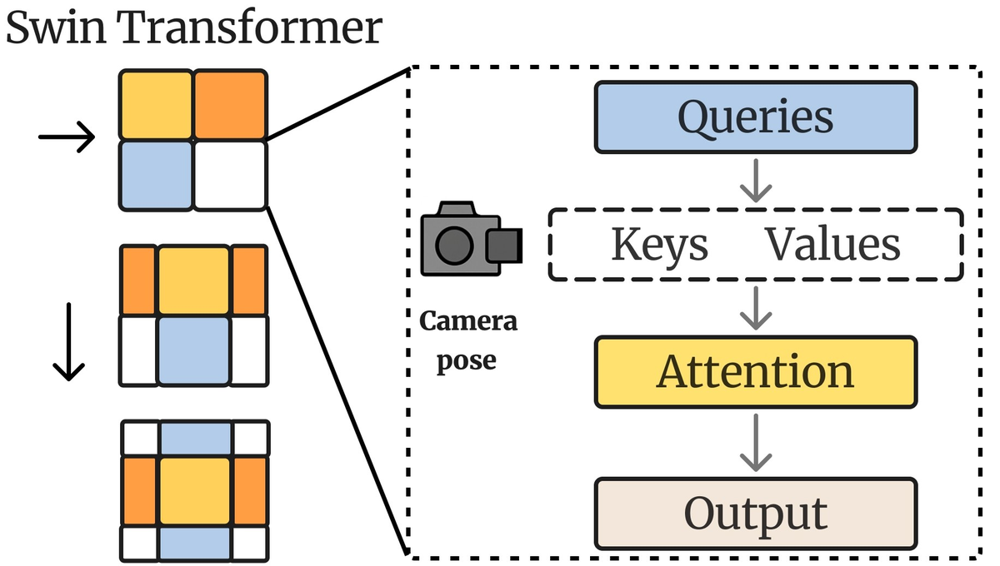
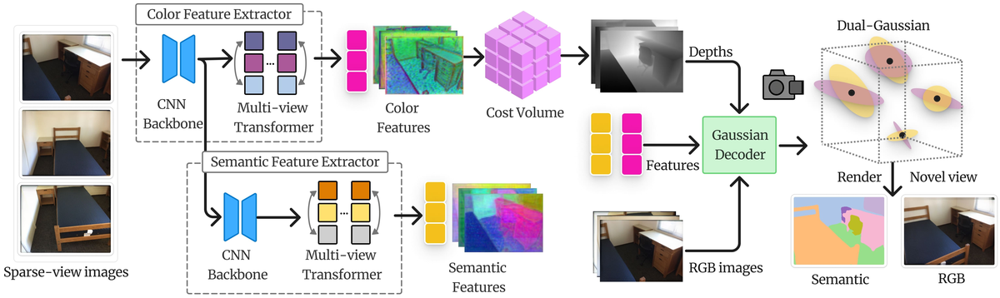
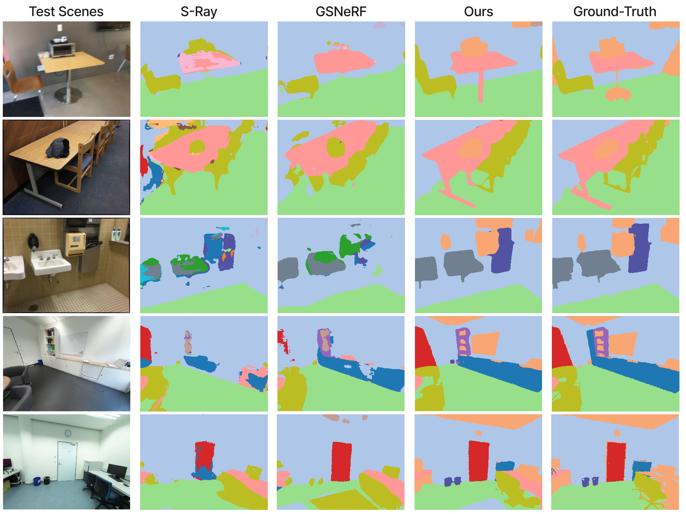
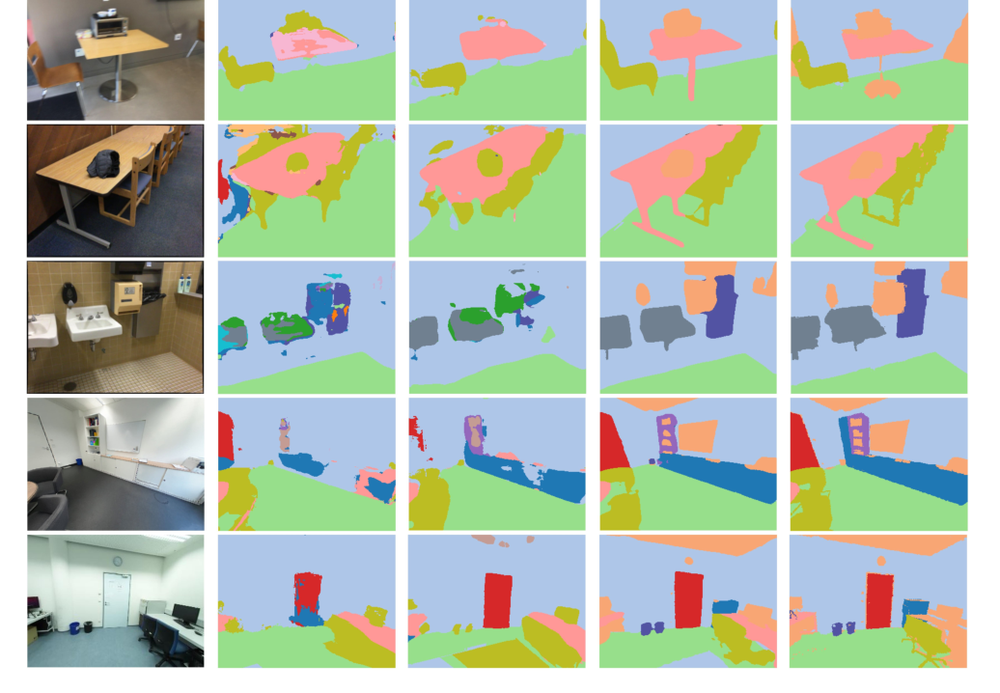
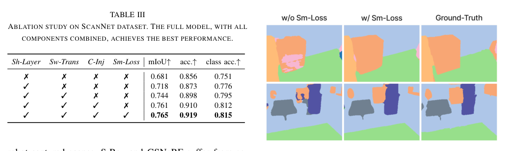

SemGS
简单摘要
为了解决这些挑战，我们提出了 SemGS，这是一种前馈框架，用于从稀疏图像输入中重建可泛化语义场。此外，我们引入了区域平滑度损失来增强语义连贯性。

3D 场景的语义理解是计算机视觉和机器人技术的基本挑战。我们的方法可以在单个前馈传递中实现快速语义推理。
核心创新
第一，为了应对这些挑战，我们提出了 SemGS，这是一种前馈框架，用于从稀疏图像输入中重建可泛化语义场。
第二，此外，我们引入区域平滑度损失来增强语义连贯性。
第三，我们提出了 SemGS，一种用于泛化语义 3DGS 的新颖框架。
技术细节
我们提出了 SemGS，一种前馈框架，用于通过稀疏输入视图的语义理解来重建 3D 场景。最后，通过可微分光栅器将预测的高斯渲染成新的视图和语义图。基于前一阶段提取的相机感知多视图颜色特征，我们使用遵循 MVSplat 的平面扫描立体策略构建成本量。


3.1 多视图特征提取
3.1.1 双分支特征提取器
我们通过专为捕获颜色和语义信息而定制的双分支架构来提取多视图特征。两个分支共享低级 CNN 层以捕获基本纹理和结构模式，同时维护特定于分支的 Swin Transformer 以进行高级特征学习。具体来说，给定输入图像，首先通过共享 CNN 主干提取低级特征。
3.1.2 相机姿势注入
我们的双分支特征提取器利用 Swin Transformer 通过其移位窗口机制来学习高级特征，从而有效地捕获本地和全局上下文。因此，我们建议采用相机感知的注意力机制（如图1所示）。对于一个 token ，为了联合编码视图间关系和视图内 token 位置顺序，我们构建了一个块对角矩阵。
3.2 多视图深度估计
3.2.1 成本量建设
基于前一阶段提取的相机感知多视图颜色特征，我们使用遵循 MVSplat 的平面扫描立体策略构建成本量。对于每个参考视图，我们在预定义的近到远范围内统一采样深度候选。然后，我们计算这些扭曲特征与原始参考特征之间的相关性，并将所有源视图的结果聚合起来，形成参考视图的 3D 成本量，表示为。
3.2.2 深度回归
给定构建的成本量和相应的 Transformer 特征，我们预测每个输入视图的每像素深度图。具体来说，每个视图的成本量和 Transformer 特征被连接并输入到轻量级 2D CNN U-Net 中，以生成每像素深度概率分布。然后将最终深度图计算为对候选深度的期望。
3.3 语义推理和高斯参数预测
利用提取的多视图特征和估计的多视图深度图，我们解码一组高斯函数来共同表示场景的几何、外观和语义。我们采用双高斯表示，其中输入视图的每个像素对应于两个高斯。用于辐射建模的颜色高斯和用于语义推理的语义高斯。
3.3.1 共享几何属性
给定前一阶段估计的每个视图深度图，通过使用相应的相机参数将所有像素反投影到 3D 点来计算 3D 高斯位置。深度概率分布与不透明度具有相似的物理意义（概率较高的点更有可能位于表面）。因此，使用 CNN 根据深度概率分布来预测高斯不透明度。
3.3.2 特定于分支的属性
高斯位置和不透明度隐式定义了 3D 场景几何形状。在这些几何属性的基础上，我们从多视图 Transformer 特征中推理出其他高斯属性，以对外观和语义进行建模。对称地，另一个轻量级 CNN 用于以输入图像和语义 Transformer 特征为条件，回归语义高斯的语义类分布和协方差。
3.4 训练
在我们的 SemGS 中，特征提取器的颜色分支和深度回归 2D CNN 使用来自前馈 3DGS 模型 MVSplat 的预训练权重进行初始化。尽管如此，由于语义高斯和颜色高斯共享几何属性，语义推理也利用了预训练模型的几何先验。为了监督预测的高斯分布，我们采用语义交叉熵损失。
$$ \tilde{\mathbf{P}}_{i\to j}=\tilde{\mathbf{P}}_{i}\tilde{\mathbf{P}}_{j}^{-1},\ \tilde{\mathbf{P}}_{i}=\begin{bmatrix} \mathbf{K}_i\mathbf{R}_i & \mathbf{K}_i\mathbf{t}_i\\ \mathbf{0}^\top & 1 \end{bmatrix}, $$
这条式子把若干坐标、状态或参数组织成矩阵/向量形式，用于后续几何变换、投影计算或状态更新。理解时重点看每一项分别代表哪一类量，以及这个矩阵最终服务于哪一步运算。
$$ \mathbf{G}_{t}= \begin{bmatrix} \mathbf{G}^{\mathrm{proj}}_{t} & 0\\ 0 & \mathbf{G}^{\mathrm{rope}}_{t} \end{bmatrix}. $$
这条式子把若干坐标、状态或参数组织成矩阵/向量形式，用于后续几何变换、投影计算或状态更新。理解时重点看每一项分别代表哪一类量，以及这个矩阵最终服务于哪一步运算。
$$ \mathbf{G}^{\mathrm{rope}}_{t}= \begin{bmatrix} \mathrm{RoPE}(x_t) & \mathbf{0}\\ \mathbf{0} & \mathrm{RoPE}(y_t) \end{bmatrix} \in \mathbb{R}^{\frac{d}{2} \times \frac{d}{2}} $$
这条式子是在定义一个可直接计算的中间量：右侧把相对位置、方向、权重或比例关系组合起来，左侧则把这个组合结果记成后续模块要反复使用的变量。
$$ \mathbf{Q}'_{t}=(\mathbf{G}_{t})^\top\mathbf{Q}_{t},\ \mathbf{K}'_{t}=(\mathbf{G}_{t})^{-1}\mathbf{K}_{t},\ \mathbf{V}'_{t}=(\mathbf{G}_{t})^{-1}\mathbf{V}_{t}. $$
这条式子给出了论文中的一条核心计算关系。理解时重点看左侧最终输出是什么，以及右侧各部分分别承担什么作用。
$$ \mathbf{O}_{t}=\sum_{u}\mathbf{A}_{t,u}\,\mathbf{V}'_{u},\ \mathbf{A}_{t,u}=\mathrm{Softmax}\Big(\frac{\mathbf{Q}'_{t}(\mathbf{K}'_{u})^\top}{\sqrt{d}}\Big), $$
这条式子描述了多个分量的聚合或逐步合成过程。它通常表示模型如何把局部贡献、概率权重或多项损失累积成最终结果。
$$ \mathcal{L} = \lambda_{sem} \mathcal{L}_{sem} + \lambda_c \mathcal{L}_{c} + \lambda_{rs} \mathcal{L}_{rs}, $$
这条式子是在定义一个可直接计算的中间量：右侧把相对位置、方向、权重或比例关系组合起来，左侧则把这个组合结果记成后续模块要反复使用的变量。
$$ \mathcal{L}_{rs} &= \sum_{l}\sum_{(i,j)\in \mathcal{R}_l} \mathbf{1}[(i+1,j)\in\mathcal{R}_l] \|\hat{\mathbf{S}}_{i+1,j}^{\,l}-\hat{\mathbf{S}}_{i,j}^{\,l}\|_1 \nonumber \\ & + \sum_{l}\sum_{(i,j)\in \mathcal{R}_l} \mathbf{1}[(i,j+1)\in\mathcal{R}_l] \|\hat{\mathbf{S}}_{i,j+1}^{\,l}-\hat{\mathbf{S}}_{i,j}^{\,l}\|_1, $$
这条式子是在定义一个可直接计算的中间量：右侧把相对位置、方向、权重或比例关系组合起来，左侧则把这个组合结果记成后续模块要反复使用的变量。
实验结论
实验部分主要围绕 这些指标是在 ScanNet 基准测试中定义的 20 个类别上计算的，并全面评估整体和类别的分割性能 展开。结果表明，总体而言，这些结果验证了每个提议组件的单独贡献，并且完整模型在所有评估指标中实现了最佳性能。
| Methods | 2 Input Views (N=2) | 3 Input Views (N=3) | 4 Input Views (N=4) | |||||||||
|---|---|---|---|---|---|---|---|---|---|---|---|---|
| 0pt8pt | mIoU | acc. | class acc. | FPS | mIoU | acc. | class acc. | FPS | mIoU | acc. | class acc. | FPS |
| S-Ray | 0.538 | 0.772 | 0.619 | 0.52 | 0.563 | 0.778 | 0.632 | 0.41 | 0.604 | 0.802 | 0.673 | 0.34 |
| 0pt7pt GSNeRF | 0.529 | 0.751 | 0.616 | 0.25 | 0.550 | 0.752 | 0.648 | 0.23 | 0.587 | 0.796 | 0.671 | 0.19 |
| 0pt7pt SemGS (Ours) | 0.754 | 0.912 | 0.803 | 8.49 | 0.757 | 0.908 | 0.811 | 7.35 | 0.765 | 0.919 | 0.815 | 6.10 |
| Methods | 2 Input Views (N=2) | 3 Input Views (N=3) | 4 Input Views (N=4) | |||||||||
|---|---|---|---|---|---|---|---|---|---|---|---|---|
| 0pt8pt | mIoU | acc. | class acc. | FPS | mIoU | acc. | class acc. | FPS | mIoU | acc. | class acc. | FPS |
| S-Ray | 0.411 | 0.775 | 0.502 | 0.60 | 0.441 | 0.808 | 0.523 | 0.46 | 0.467 | 0.804 | 0.558 | 0.38 |
| 0pt7pt GSNeRF | 0.421 | 0.760 | 0.503 | 0.29 | 0.450 | 0.794 | 0.538 | 0.26 | 0.479 | 0.813 | 0.562 | 0.21 |
| 0pt7pt SemGS (Ours) | 0.625 | 0.903 | 0.689 | 9.24 | 0.671 | 0.924 | 0.734 | 7.68 | 0.676 | 0.927 | 0.739 | 6.29 |



4.1 实验装置
4.1.1 实施细节
实验部分主要围绕 我们的 SemGS 在 PyTorch 中通过基于 CUDA 的高斯光栅器实现 展开。结果表明，在双分支特征提取器中，颜色和语义分支共享由 6 个 CNN 残差块组成的 CNN 主干。
4.1.2 基线和数据集
实验部分主要围绕 我们将 SemGS 与该领域的两种最先进的方法进行比较 展开。结果表明，为了进一步评估泛化能力，我们直接评估在未见过的领域上在 ScanNet 上训练的模型，无需进行微调。
4.1.3 评估指标
实验部分主要围绕 继之前的工作之后，我们报告了三个语义指标 展开。结果表明，这些指标是在 ScanNet 基准测试中定义的 20 个类别上计算的，并全面评估整体和类别的分割性能。
4.2 定量评价
实验部分主要围绕 在这两个数据集上，SemGS 在所有指标上始终优于先前的工作，并表现出更强的语义推理能力 展开。结果表明，只需 2 个输入视图，SemGS 就已经在 mIoU 上取得了显着的改进，显示了我们的框架在极其稀疏的输入下的有效性。
4.3 定性评价
实验部分主要围绕 我们在图 1 中提供了更多定性比较 展开。结果表明，总体而言，我们的 SemGS 优于现有方法，并生成更接近真实注释的语义图。
4.4 消融研究
实验部分主要围绕 为了验证 SemGS 中每个提议组件的有效性，我们对 ScanNet 数据集进行了消融研究，结果报告在表中 展开。结果表明，因此，它主要提高像素精度（acc.），因为该指标以大面积类别为主。
4.5 普遍性
实验部分主要围绕 为了进一步评估每种方法的通用性，我们直接将在 ScanNet 上训练的模型应用于未见过的领域，包括复制合成场景和现实世界机器人捕获的场景 展开。结果表明，在合成场景中，我们的方法可以准确区分细粒度结构并保留清晰的边界。
理解评价
如果把这篇论文放回问题背景里看，它真正的价值在于：为了解决这些挑战，我们提出了 SemGS，这是一种前馈框架，用于从稀疏图像输入中重建可泛化语义场。这说明作者不是只补一个局部模块，而是在重新组织问题该怎样被解决。
最能支撑这个判断的，还是实验给出的证据：只需 2 个输入视图，SemGS 就已经在 mIoU 方面取得了显着的改进，显示了我们的框架在极其稀疏的输入下的有效性。换句话说，这些设计并不只是概念上更完整，而是实实在在改变了最终结果。
当然，它离真正成熟的方案还有距离：当前方案的局限在于它仍然受制于计算资源、输入质量或场景复杂度，距离真正稳健的大规模部署还有差距。后续更值得继续推进的方向，是 未来继续提升效率、泛化能力以及在更复杂场景下的稳定性。